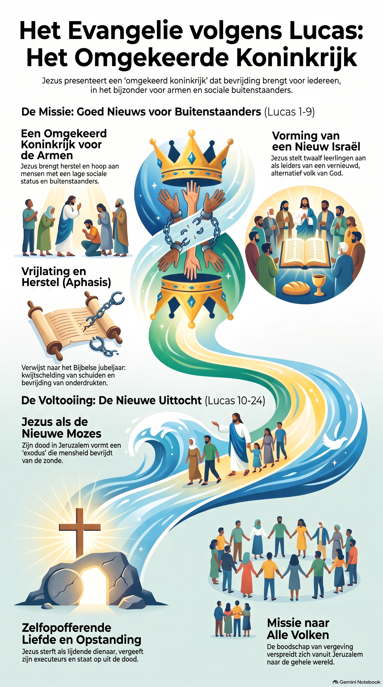

Visueel Overzicht & Leestekst

Visuele samenvatting: Het Omgekeerde Koninkrijk en de twee hoofdfasen in het Evangelie volgens Lucas.
1. Inleiding: Wie schreef het evangelie volgens Lucas en waarom?
Stel je voor dat je een spannende ontdekkingsreis maakt door het leven van Jezus. De gids die jou meeneemt is Lukas. Lukas was geen ooggetuige vanaf de allereerste dag, maar hij was wel een slimme dokter en een trouwe reisgenoot van de apostel Paulus. Hij vond het superbelangrijk dat het echte verhaal over Jezus heel nauwkeurig werd opgeschreven. Daarom ging hij als een echte speurder te werk: hij interviewde mensen die Jezus zelf hadden meegemaakt en verzamelde al hun ooggetuigenverslagen om tot een helder en ordelijk verslag te komen.
Het bijbelboek Lukas is het eerste deel van een indrukwekkend tweeluik; deel twee is het boek Handelingen. Voor Lukas was de komst van Jezus niet zomaar geschiedenis, maar de vervulling van Gods eeuwenoude belofte aan Israël én aan de hele wereld.
De hoofdstructuur van het Evangelie volgens Lucas:
- De voorbereiding (hoofdstuk 1 t/m 2): De bijzondere geboorteverhalen van Johannes de Doper en Jezus die als spiegels naast elkaar staan.
- De missie in Galilea (hoofdstuk 3 t/m 9): Jezus begint zijn werk in zijn eigen streek en introduceert zijn 'omgekeerde koninkrijk'.
- De reis naar Jeruzalem (hoofdstuk 10 t/m 19): Het grote middenstuk waarin Jezus onderweg is en leert wat het kost om hem echt te volgen.
- De slotweek, dood en opstanding (hoofdstuk 20 t/m 24): Het hoogtepunt in Jeruzalem met de lijdensweg, kruisiging en de openbaring op de Emmaüsweg.
2. De voorbereiding en Galilea (Hoofdstuk 1 t/m 9)
Het boek opent met de aankondiging en geboorte van Johannes de Doper (aan het oude echtpaar Zacharias en Elisabeth) en Jezus (aan Maria en Jozef). Na zijn doop in de Jordaan stelt Lukas de stamboom van Jezus op. Waar andere evangelisten stoppen bij Abraham, klimt Lukas helemaal terug via koning David naar Adam. Hiermee toont hij aan dat Jezus er niet alleen is voor de Joden, maar voor de gehele mensheid.
In Nazaret leest Jezus voor uit Jesaja en introduceert het begrip Afesis (vrijlating/kwijtschelding, verbonden aan het Joodse Jubeljaar). Tijdens zijn toespraak op een vlakke plek (de veldrede) legt hij het omgekeerde koninkrijk uit. Op de berg van de gedaanteverandering spreekt hij met Mozes en Elia over zijn aanstaande exodus die hij in Jeruzalem zal volbrengen.
3. De reis naar Jeruzalem en buitenstaanders (Hoofdstuk 10 t/m 19)
In dit lange reisgedeelte daagt Jezus zijn leerlingen uit tot een minimalistische houding ten opzichte van geld en bezit. Hij zoekt bewust de sociaal uitgestotenen en gehaatte figuren op, zoals Samaritanen en de schatrijke belastinginner Zacheüs. Via gelijkenissen zoals de verloren zoon laat hij zien dat Gods hart uitgaat naar verloren mensen, en dat een oprecht en nederig hart (met nederigheid en berouw) de enige toegangseis is voor zijn feestmaal.
4. De laatste week, het kruis en Emmaüs (Hoofdstuk 20 t/m 24)
Tijdens de laatste Pesachmaaltijd geeft Jezus een nieuwe diepe betekenis aan het brood en de wijn. Ondanks dat de Romeinse gouverneur Pilatus en koning Herodes hem herhaaldelijk onschuldig verklaren, wordt hij onder druk van de menigte gekruisigd. Aan het kruis spreekt hij vergeving uit. Op de dag van zijn opstanding ontmoet hij twee verdrietige reizigers op de weg naar Emmaüs; pas wanneer hij aan tafel het brood breekt, vallen de schellen van hun ogen en herkennen ze de levende Heer.
Uitgebreide Verklarende Woordenlijst
- Afesis: Grieks voor vrijlating of kwijtschelding; verwijst naar het Joodse Jubeljaar waarin schulden werden kwijtgescholden en slaven vrijkwamen.
- Vlakke veld: De locatie waar Jezus zijn veldrede hield en onderwijs gaf over de omgekeerde sociale orde van Gods koninkrijk.
- Exodus: De geestelijke uittocht en bevrijding van zonde en dood die Jezus door zijn lijden en opstanding in Jeruzalem volbracht.
- Nederigheid en berouw: De grondhouding van een mens die inziet dat hij/zij genade nodig heeft; de ultieme toegang tot Gods familiefeest.
- Brood: Het centrale herkenningsteken en symbool van zelfopofferende liefde waarmee de Emmaüsgangers Jezus herkenden.
Deel 1: Infographic Analyse (Het Omgekeerde Koninkrijk)
Bekijk de visuele infographic hierboven goed en beantwoord de volgende vragen:
Deel 5: Snelle Inhoudscheck
5.1 Meerkeuzevragen
5.2 Waar / Niet Waar Stellingen
Deel 6: Verdieping & Reflectie
Beantwoord de volgende reflectievragen uitgebreid in eigen woorden.